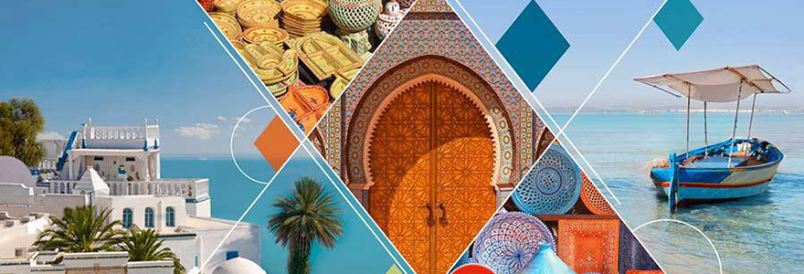

- VOYAGE:
- SERVICES:
Notre agence de voyage vous propose de nombreuses destinations sur-mesure en fonction de vos souhaits, de votre budget et de vos exigences. Voyages en groupe, voyages individuels, voyages à la carte, croisières ou circuits, vous trouverez forcément le voyage qui vous correspond. Besoin de faire une pause ou de casser la routine ? Envie de dépaysement ? De découvrir d'autres cultures ? Avec Bleu Ciel, vous avez un seul interlocuteur pour l'organisation de votre voyage. Ainsi, nous vous proposons plusieurs prestations adaptées à vos besoins
Nos experts du tourisme vous conseillent dans l'achat d'un billet d'avion, forfait touristique ou voyage à la carte. Vous disposez également du package « dynamique », composé sur-mesure et à votre convenance. Notre rôle de conseil est pour nous une priorité. Nous sommes à votre disposition pour toutes questions sur les différentes destinations souhaitées et votre budget.
